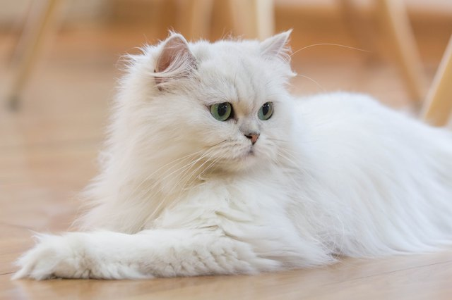

persian cats
information page
go back to home page

The Persian cat is a popular breed known for its long, luxurious coat and
gentle disposition. Here are some key facts about Persian cats:
- They have long, thick coats with a variety
of colors and distinctive large eyes. The breed is also known for its flat face,
a result of selective breeding.
- Persian cats are described as docile, quiet, and affectionate. They enjoy being petted and cuddled,
and they are known for their sweet and friendly nature. They are not typically demanding of
constant attention.
- Persian cats are one of the most popular cat breeds in the world and have been favored
by royals and historical figures, such as Queen Victoria.
- Due to their long coats, Persian cats require regular grooming to prevent matting and tangles.
- They are known to live a good long life,
and with proper care, they can be a loving companion for many years.